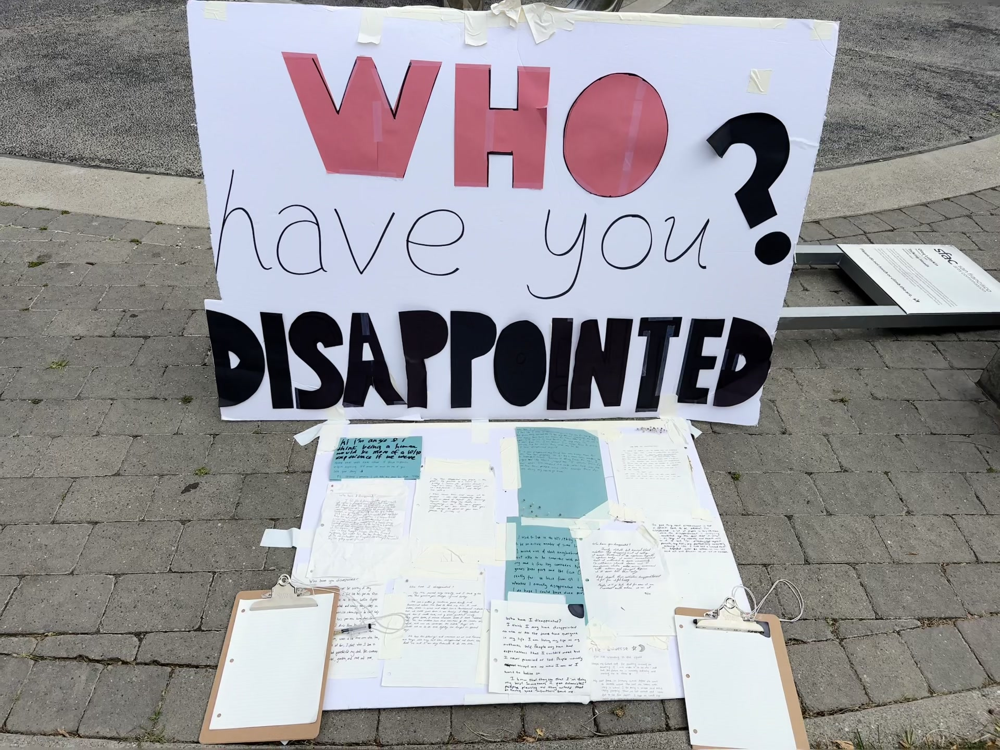
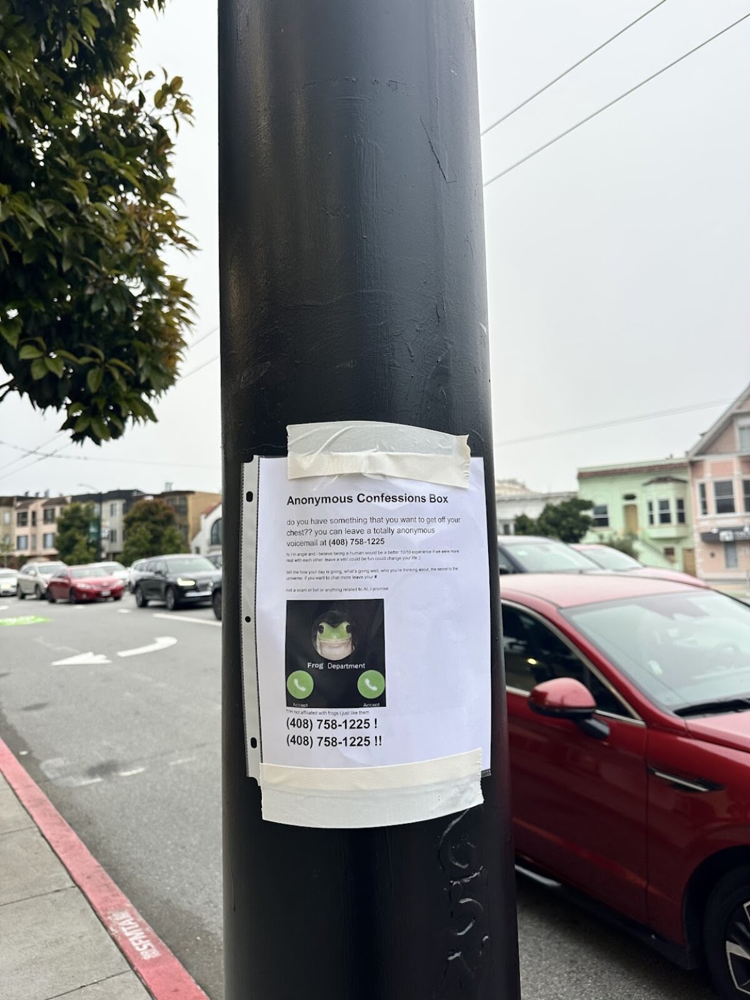
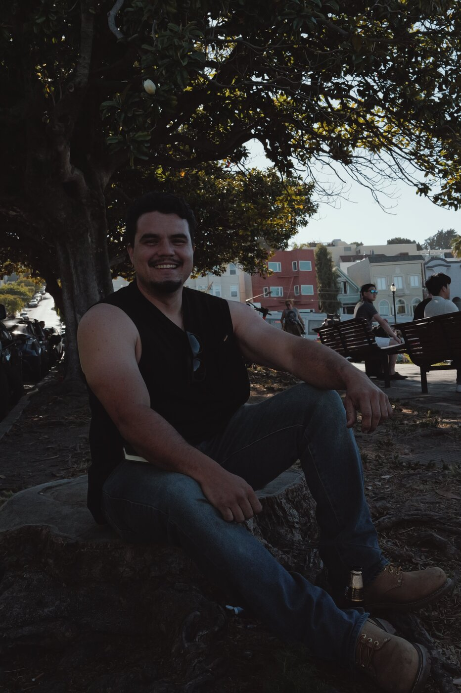
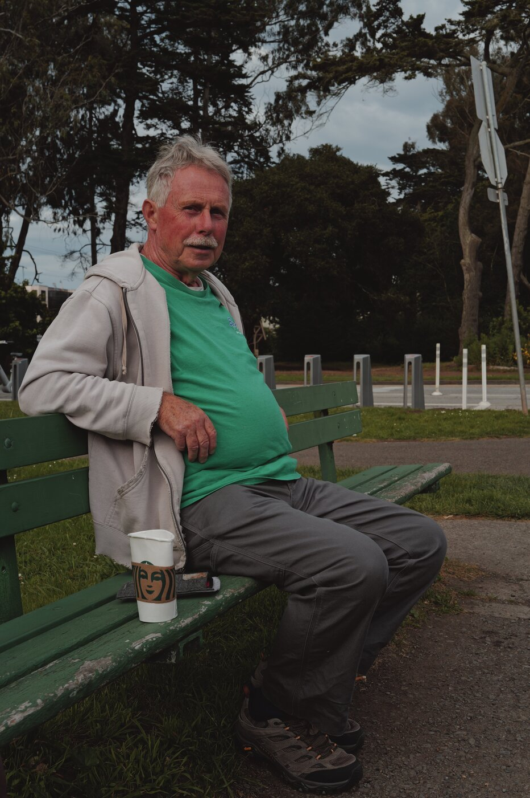
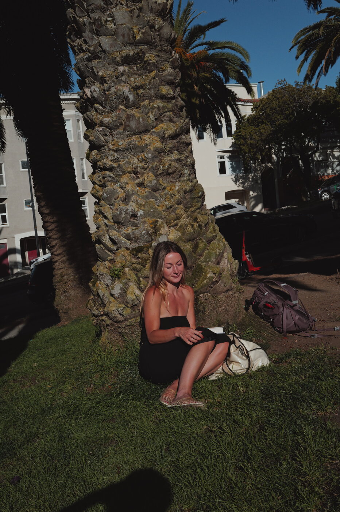
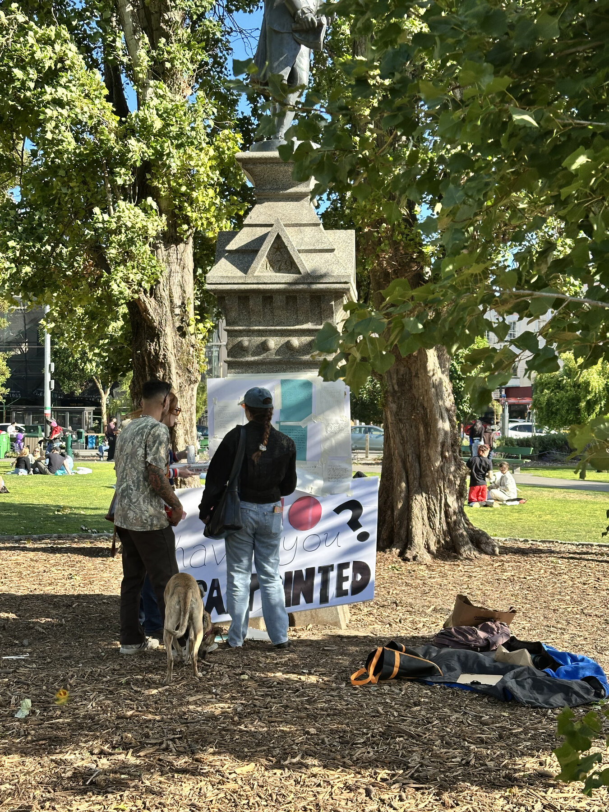
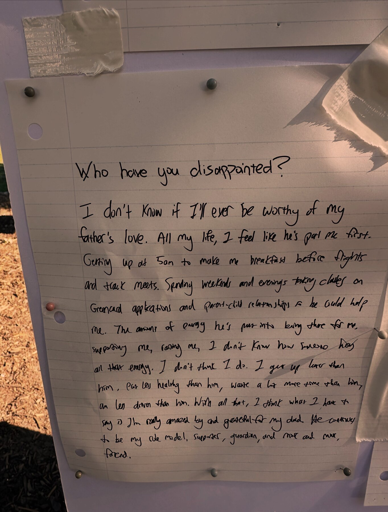

Angela hopes to live in a more whimsical, joyous, and vulnerable world. Her project centers around creating art from the stories of every day people, through listening to and bringing to life their stories.
Strangers leave me an anonymous confession in the form of a voicemail.

I get to know strangers and make short films from their lives, such as the greatest challenge they've overcome, a dream they've given up on, their greatest love, etc. My topics focus on friendship, adversity, and vulnerability.



A place for strangers to reflect on their life through the written word & learn about their neighbor's stories.

